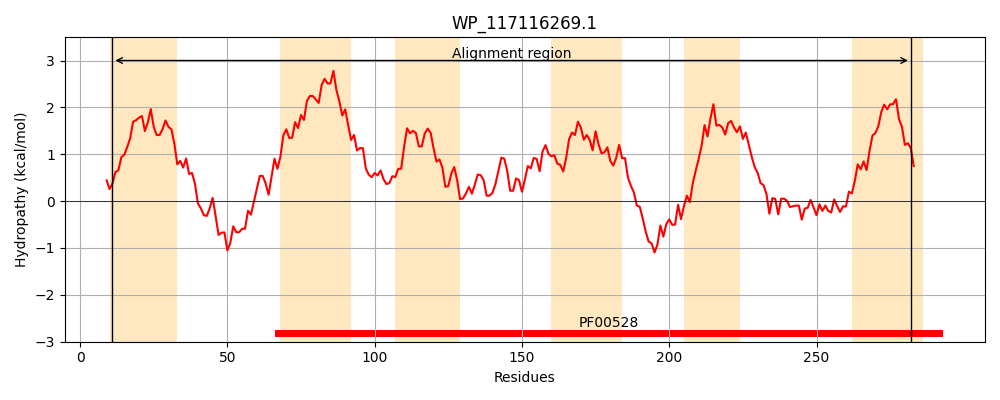
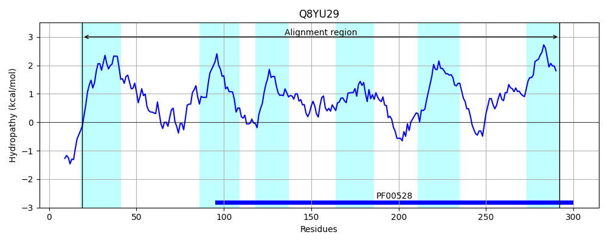
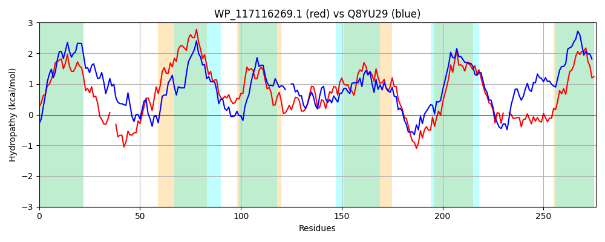

Hit Accession: Q8YU29
Hit TCID: 3.A.1.1.52
Hit Description: gnl|BL_ORD_ID|17101 gnl|TC-DB|Q8YU29|3.A.1.1.52 Sugar ABC transport system, permease protein OS=Nostoc sp. (strain PCC 7120 / SAG 25.82 / UTEX 2576) GN=alr2532 PE=3 SV=1
Mach Len: 276
e:0.000000
Query TMS Count : 6
Hit TMS Count: 6
TMS-Overlap Score: 5.900000
Predicted Substrates:CHEBI:4853;esculin, CHEBI:6668;maltose, CHEBI:9314;sucrose, CHEBI:60980;beta-glucoside, CHEBI:5418;glucose, CHEBI:5172;fructose
BLAST Alignment:
Score: 421 , Bit scores: 166 bits, E-value: 6.8e-50, Alignment length: 276, Percentage identity: 34
Query: 11 ALIPWLFLAPALIIFSWFKFIPMIQGLVMSFYKVNF--NQPNEWVGLDNFTRAFADVELHAAVVNTLLYVVVTMFAAAILAFFLAMLLEGPARHLRFIRTAIFLPAVTSAAIVAEMWRILFNPTPNGVINHILSWFGVADQGFLASSDQALWVIMLLHIWKAVPYNMVIFIAGLAGISRDLYDAANVDGANWWNRLRYVTLPGMIPALSVVLMLSFIRGFRVFAEVYATTG--GGPSNATEMVMTHIYKLGFEQFDYGYASAVSFLLFAFTVFLTI 282
+L ++F+ P L++ F +P++ + +S KV +++GL NF R D + A+ NT YVV+ + + +LA LA+ L R + R FLP VTS+A++ ++ ++N +G++N L++ G+ +L AL IML++IW P+ MVI++A L I LY+AA +DGANWW + Y+T+P + P V+ + I F++F + Y +G GGP+NAT V+ IY++ F GYA+A++FLL + +T+
Sbjct: 19 SLFGYVFMMPTLLVLGTFVVLPILYSVFLSLNKVQLLGGVAYQFIGLRNFQRLVDDELVWIALRNTAEYVVIVVPSQTVLALILAVTLNAGIRGKNWWRILYFLPTVTSSAVLTLIFMWIYNT--DGLLNDFLAFLGLPTYNWLGDPAVALKGIMLMNIWSTAPFYMVIYLAALQDIPAKLYEAAELDGANWWQQFIYITIPLLKPVTFFVIAVGVIGTFQLFDQSYIFSGGTGGPNNATLTVVLLIYQMVFRYLQMGYAAAIAFLLAVVIIGITL 292 | Protein Hydropathy Plots: |
|---|
|  |  |
Pairwise Alignment-Hydropathy Plot:
|
|---|
|  |